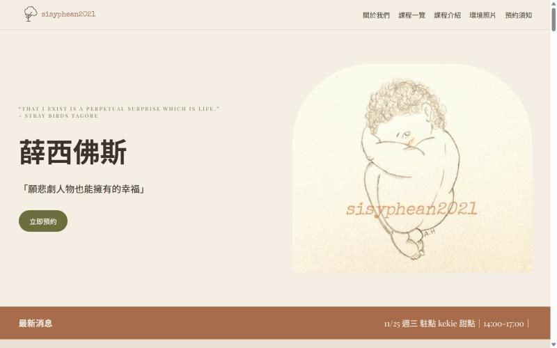

這堂課在做什麼
薛西佛斯是台中的一間身心靈工作室，做療癒服務與手作體驗課， 客人大多從 Instagram 來。她原本的問題很具體：IG 簡介只能放一個連結， 但她有十幾個服務、每個都有不同的時長和價格，貼文一往下滑就不見了。
這是一堂三小時的一對一課，我們在三小時內把網站做出來、發布上線： sisyphean2021.my.canva.site。
她要的不是一個設計師做的網站，
是一個她自己可以改的網站。
老實說，如果交給我維護、交給我幫她做網站，那我可以收維護與更新的費用， 但是我同時也知道，其實這對一個一個人經營的工作室來說，那是個長期的支出。 外加一個小小的困難點是她目前擁有的設備只有手機， 所以這個案子的交付物不是網站檔案，是「她能自己維護的能力」， 而網站只是那堂課結束時剛好能實際帶走的東西。

上線後的首頁
一開始的各種準備
我們一開始並不是直接開始做網站，而是從簡單的 Canva 教學開始。 不過因為她自己有使用過，所以我們很快速地帶過， 只有稍微複習一下，並且帶到今天會用到的工具。
再來我們就一起討論 IA，用討論與紙本畫圖的方式，去建構出她想要呈現的內容。 很開心她自己有很多想法，所以這塊我們也很順利地討論出她想要的樣子。
因為我自己本身就是做 UI/UX，我從旁告訴她或許可以改成什麼樣的樣式、 或是還有什麼其他呈現方式可能更適合，讓她多一點選項去做選擇。
這張紙最後我請她拍照留著。她之後要新增課程時，照著它擴充就好。
限制與取捨
這次稍微比較困難的限制是：她目前的設備只有手機， 並且希望將花的錢降到最低——她最終想要的，只是一個簡單的介紹網站。
所以縱使我知道有很多其他的工具可以呈現得更好、可以做出更多不同花樣， 我最後還是選擇 Canva 這個工具。 因為我希望找到一個只要三個小時她就可以上手、就可以自己做後續修改， 真正適合她的工具。
成果與交付
三小時結束時，網站已經發布在 sisyphean2021.my.canva.site， 現在上面有十二個服務、九項療癒服務與三堂體驗課，每一項都有說明、時長、價格與預約按鈕， 還有關於我們、環境照片與預約須知。
當天我們完成了大約九成的區塊，整體架構與圖片、文字都加上去了， 最後有些區塊我有給她一些建議可以怎麼增加， 並且確認她知道怎麼發布、怎麼更改等等的。
網站最上面那條「最新消息」是刻意留的位置—— 放當週的駐點資訊，是整個網站最需要被經常更新的一塊， 所以它被放在最顯眼、也最好改的地方。